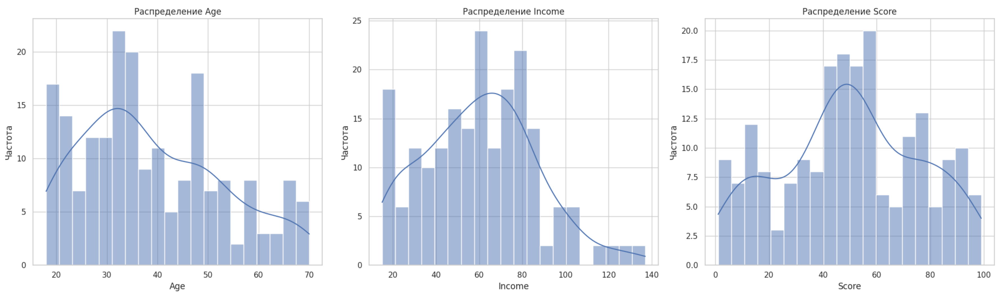
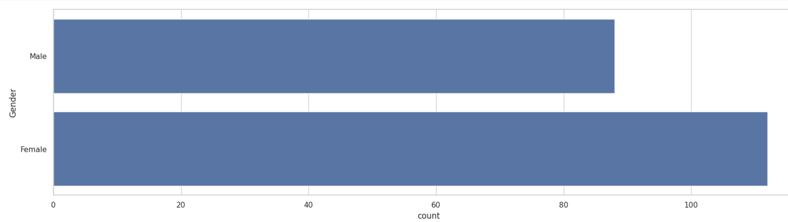
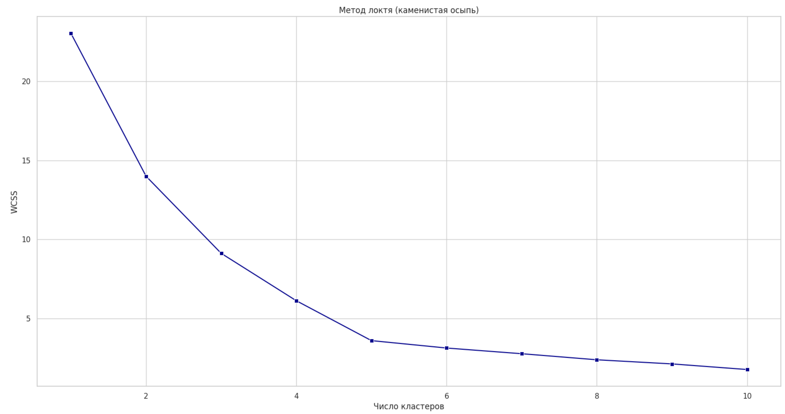
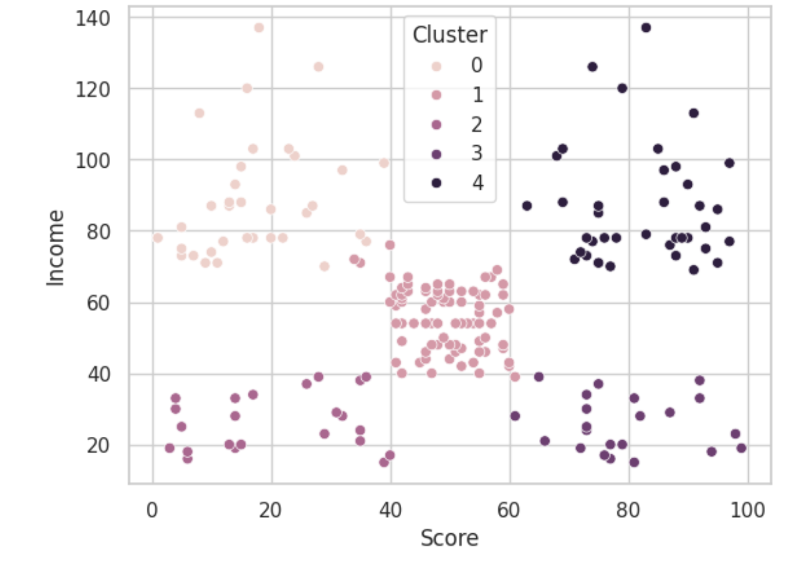
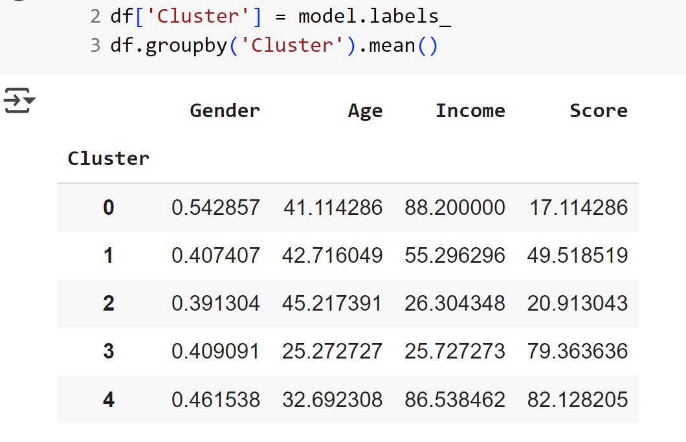
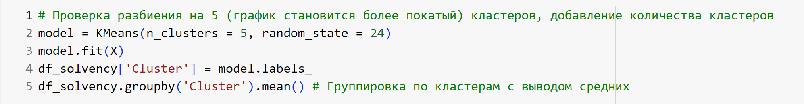

Кластеризация целевой аудитории
🎯 Цель
Проанализировать и сегментировать аудиторию магазина для создания персонализированной маркетинговой стратегии и повышения выручки.
📊 Визуализации
Данные взяты из открытых источников. Структура и логика соответствуют реальному проекту.
Распределения и EDA


Метод локтя

Результат кластеризации


Ключевой фрагмент кода

Jupyter Notebook
📈 Результаты
Выделено 5 сегментов с разным потенциалом и поведением:
- А - тратят много при большом доходе (любимые клиенты магазина)
- Б - тратят мало при малом доходе
- В - тратят средне при среднем доходе
- Г - тратят мало при большом доходе (экономные богачи, магазину нужно настраивать на них рекламу, призывая тратить больше)
- Д - тратят много при малом доходе (бедняки-транжиры, очень преданны магазину)
🛠 Использованные инструменты
• Python • Pandas • Seaborn • Matplotlib • NumPy • sklearn • Jupyter Notebook
← Вернуться на главную